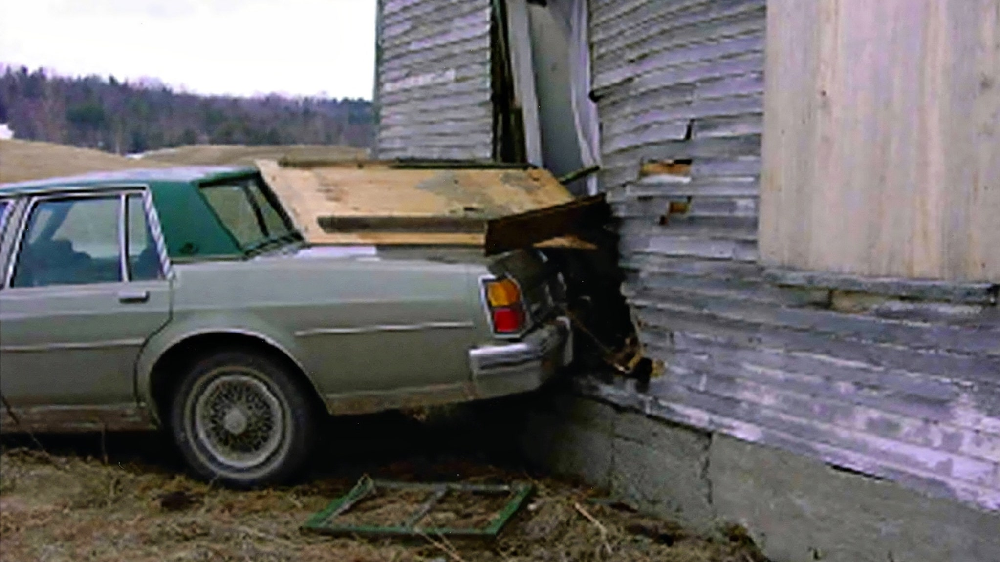

Tailgated on VT-118, evasion into the house, a fleeing assailant who hits a Silver Civic on the way out, and a disabled car later that night
Follow the complete 10-stage sequence that connects every clue and road witness on Route 118: Brianna leaves work at 11:20 pm, an assailant tailgates her on VT-118, both pull over next to the Dutchburn house, a road-rage conflict erupts, Brianna reverses into the house trying to evade, a fresh lime lands on the trunk, and the assailant subdues and kidnaps her. Pulling out recklessly to flee, the assailant strikes a passing Silver Civic on the way out—sending the Silver Civic speeding around to find who hit him while the eyewitness couple chases the Civic, and explaining the disabled vehicle James Robitaille (`JR`) saw later that night (which could be either the assailant or the hit Silver Civic).
Trace the 10-act French-Canadian smuggler & Silver Tuned Civic sequence (click any act to jump video)
Both the timeline flowchart and the video below play out the complete 10-act hypothesis—from the Jay Peak bar (spending CAD at par, spite-taking ski instructor Andrea's jacket and a Jack & Coke with lime) to the VT-118 brake-check fender-bender, the Dutchburn apron confrontation, the panic reverse into the house, the second concussion, clearing the front passenger seat, doubling back into a guy in a hoodie and suspicious passing cars, and overnight shelter at a Vermont stash house before VAST snowmobile disposal.
Timeline Flowchart: The 10-Act Silver Tuned Civic Narrative (Click any node to jump video)
01 Jay Peak Bar → 03 Apron Reverse → 05 House Crash → 07 Clears Front Seat → 09 Hoodie & Cars → 10 Stash House & VAST TrailCAD at par, Andrea's jacket, brake-check bump & broken necklace
A French-Canadian weed smuggler spends Friday night around Jay Peak drinking Jack & Coke with lime (spending CAD at par). After an unrequited advance on ski instructor Andrea Grover, he spitefully takes her small fleece jacket and his drink to his silver souped-up "Fast & Furious" car. Speeding on VT-118, he tailgates Brianna's Delta 88; she brake-checks him into a minor fender-bender. He flips his high beams and beeps, pulls onto the Dutchburn apron, and yells for her to reverse over. Pissed over his tuner car, he half-argues and half-creeps on her; they vaguely recognize each other, and when he grabs at her necklace she pulls away, snapping it onto the ground.
Upset crash masks scuffs, French muttering, punch & 4 items dropped
Upset and trying to leave, Brianna accidentally backs into the Dutchburn house—obscuring the fender-bender scuffs. She turns the car off and pockets the keys, leaving the lights and signals on as she steps out crying. Nervous because he is DUI with drugs in his car and she knows him, her crying triggers him ("don't be like that, just chill out", muttering in French, no cell service). She refuses a ride ("no, I'll walk"), a scuffle ensues, and he punches her—causing a second concussion as she falls on the back of her head. Lifting her slumped body spills ~$0.65 change; panicking, he clears his front seat by tossing out Andrea's jacket, a coffee cup/mug, and his Jack & Coke with lime against the house/trunk.
Wrong-way U-turn, aborted dump at scene & Vermont stash house
Not knowing the way to the hospital, he rolls the windows down telling her to stay awake, drives the wrong way (east) and turns around as she fades. He doubles back to the Dutchburn scene thinking he might dump her back at her car—but there is already a guy in a hoodie looking at the scene and passing cars getting suspicious. Suddenly in a disposal scenario and unable to cross the Canadian border with a body, he sleeps that night alone at his Vermont stash house with her body in his car, then snowmobiles deep into the VAST trail network (known from weed smuggling) that weekend to drop her body.
Why the building crash masked the rear-ender, and why a Canadian driver wouldn't show up in Friday night Richford border logs
Two assumptions stalled the vehicle investigation for years: (1) assuming all rear-end damage on the Oldsmobile came solely from backing into the house, and (2) assuming a Canadian car had to cross the Richford border station within minutes of the crime. Both assumptions fail under forensic scrutiny.
Backing hard into the barn/house masked the initial rear-end collision damage
When a steel-bumper 1985 Oldsmobile Delta 88 is rear-ended by a lower plastic-fascia 1996–2003 Honda Civic or Acura EL, the initial contact leaves paint transfer, bumper-shock compression, and asymmetric torque on the Oldsmobile's rear bumper while cracking the Civic's front fascia/hood.
Seconds later, when the Oldsmobile reversed hard into the Dutchburn timber wall and concrete foundation—punching through the siding and dropping broken clapboards onto the trunk lid (`ob_clapboards_on_trunk`)—that violent second impact overlaid and masked the forensic signature of the initial rear-end tap.
Yet when viewers in the October 2006 bringbrihome.org Crime Scene Photos thread (`showtopic=261`) examined VSP's rear-impact photograph closely, they noticed the bumper's telltale asymmetry: pushed in on the left (driver's) side and bowed out on the right.
Why a Canadian driver could cross back much later—or at a distant port of entry
Even if the fleeing silver/grey car was a Canadian-registered Honda Civic or Canadian-exclusive Acura 1.6 EL / 1.7 EL (sold only in Canada from 1997 to 2005), the driver did not have to cross back into Quebec at Richford on Friday night:
1. Delayed return (hours or days later): Half of Jay Peak's clientele and many Montgomery bar-goers were Canadians staying in weekend ski condos, chalets, or friends' homes in Montgomery, Jay, Richford, or Enosburg. A driver involved in an incident at 11:30 pm Friday could park the car in a local garage or driveway overnight and cross back into Canada on Sunday afternoon or Monday amidst thousands of returning weekend skiers.
2. Distant or unrecorded ports of entry: Instead of using the tiny Pinnacles/East Richford post 6 miles north, a driver could cross back 40–65 km away via Highgate Springs (I-89), Alburg / Noyan, Champlain / Lacolle (I-87), Derby Line (I-91), or an unstaffed back road—completely outside any narrow Friday-night Richford border check.


How James Robitaille's accident sighting and the couple's speeding Civic sighting lock the 180-second transfer
Putting the four Route 118 witnesses in chronological order proves that the car doors were closed and the silver Civic fled west during the three-minute gap between ~11:27 pm and ~11:30 pm.
Diane Wheeler · Lou Barry
Sees fresh car accident
Sees speeding Silver Civic
Third pass
Fourth pass
Visual timeline: The 15-minute window on March 19 and the 12-day forum ripple
Estimated 2004 grey/silver Civic & Acura EL fleet (blue circles) vs. share reaching VT-118 at 11:30 pm (amber circles)
Share of reachable grey Civic-like cars on VT-118, by home county/region
4,000 Monte Carlo draws over fleet share, paint color, and OSRM drive-time decay.
Fleet size (log scale) vs. drive time to the Dutchburn house
Montreal & Brome-Missisquoi hold ~11,250 grey/silver Civics & Acura ELs; Franklin County holds ~119.
Who needed urgent collision repair or body panels for a silver Civic or Acura EL right after March 19, 2004?
Combining the eyewitness couple's account of a speeding silver Civic with James Robitaille's sighting of a fresh car accident means the intercepting vehicle likely suffered front or rear fender-bender damage on Friday night, March 19, 2004. Across 3,908 Wayback Machine captures from 2004 regional car forums, six specific threads posted between March 20 and March 31, 2004 match an off-book repair or weekend crash of a Civic/EL/Integra.
Three concrete steps to identify the silver Civic / Acura EL driver today
1. Resolve the March 20–31, 2004 forum handles (`t=101929`, `t=102280/102268`, `t=102191`, `t=146189`): Cross-reference archived registration emails, phone numbers, and location tags from montrealracing.com and civicforums.com against known 2004 corridor visitors, Jay Peak passholders, and border crossers over the entire March 19–28, 2004 week.
2. Widen the Canadian border query in time and geography: Query southbound and northbound license-plate logs from March 18 through March 26, 2004 across all regional ports (`Richford`, `East Richford`, `Morses Line`, `Highgate Springs`, `Alburg`, `Champlain/Lacolle`, and `Derby Line`) for 1996–2003 grey/silver Honda Civics and Acura 1.6 EL / 1.7 EL sedans.
3. Cross-check the ~119 Franklin County & ~250 Brome-Missisquoi registrations: Match the 2004 Vermont DMV and Quebec SAAQ registration lists for grey/silver 1996–2003 Civics and Acura ELs against the 39 people in ledger/people.json, their 1-to-2 hop associates, and local body-shop/salvage yards between Enosburg, Richford, Sutton, and Cowansville.
Note on privacy: Forum thread IDs and dates come from March–April 2004 Internet Archive captures (`archive/gemini_antigravity/findings.md`). They are statistical/investigative leads for law enforcement verification.